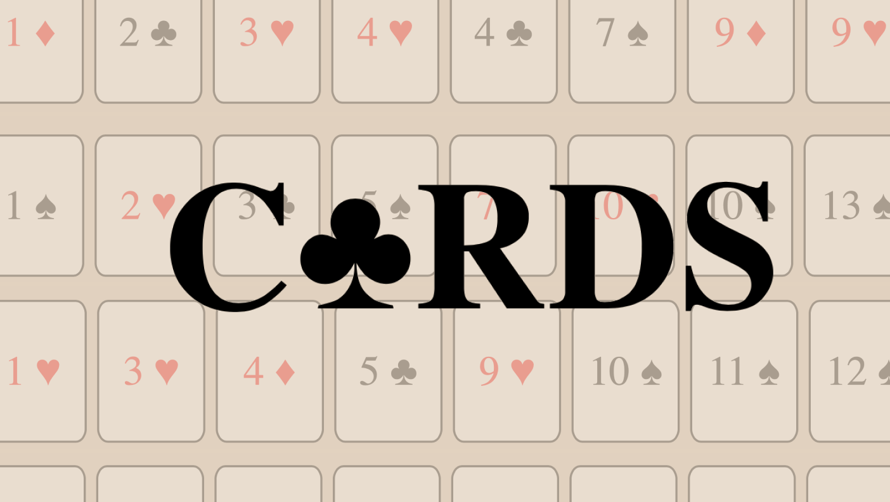
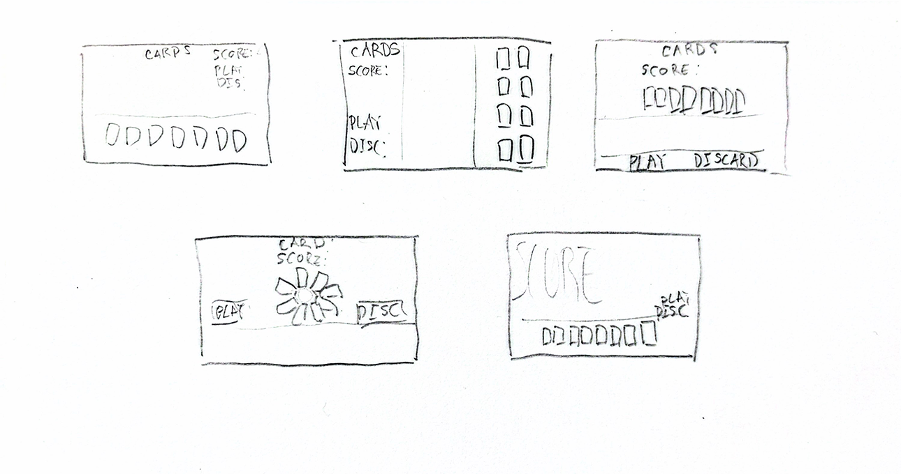
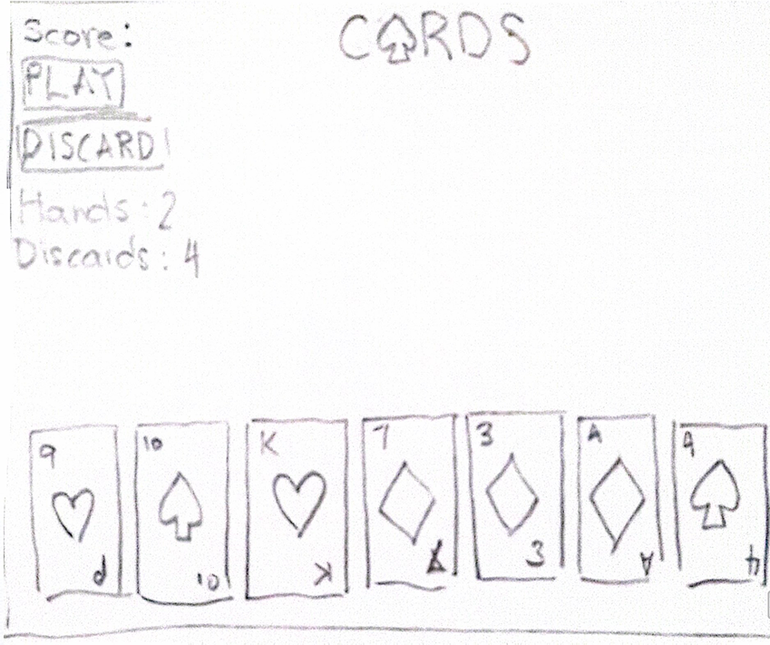
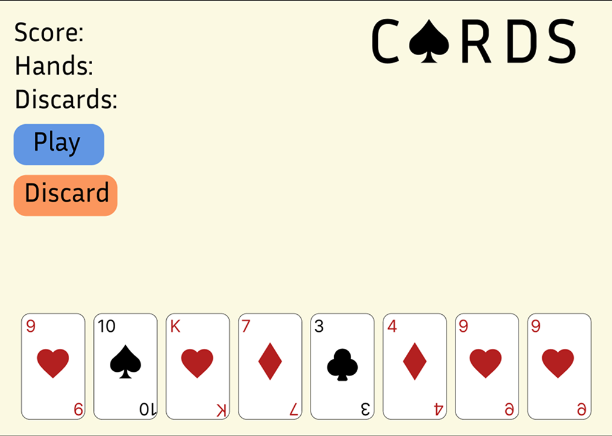
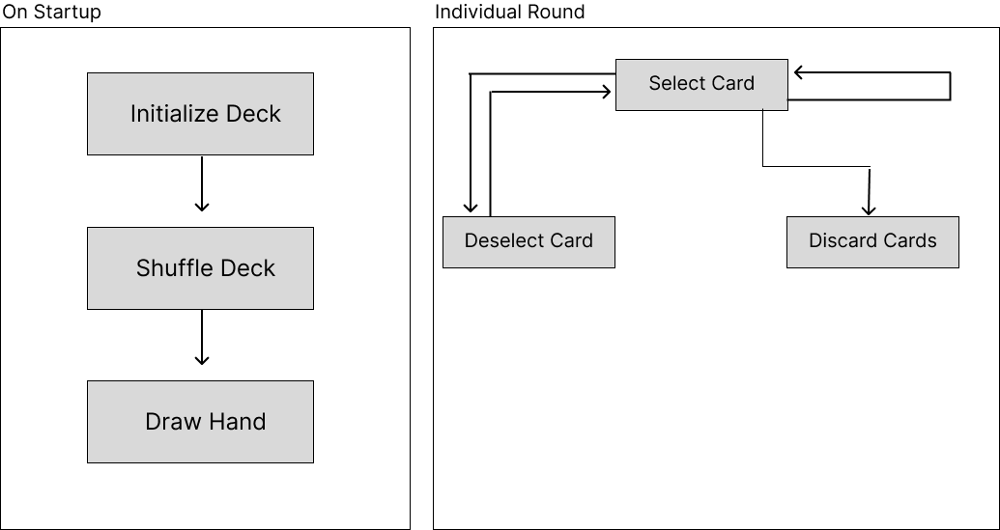
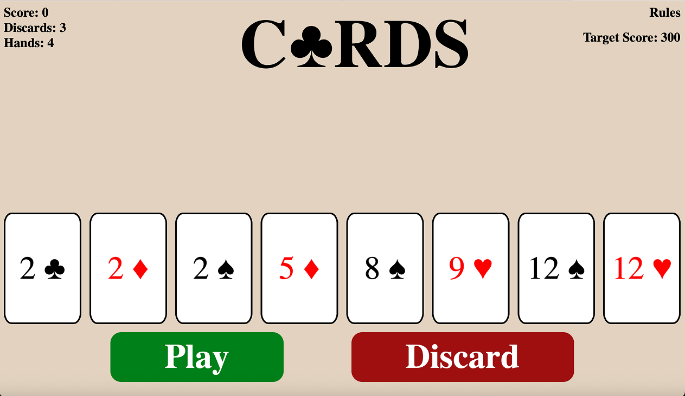

Game On acted as the final project for the Interactive Media II course. I was tasked with following a game engine script that used objects and data to create some kind of gaming experience. It also served as the ultimate test of my HTML, CSS, and Java Script skills.
Going into the project, I knew I wanted to create a rogue-like card game system akin to Balatro. I was confident in my ability to use Java Script beyond what was required for the assignment. The first step was sketching several examples of what the main page would look like.

After settling on a design that I felt best maximized the use of screen size, mocked up a more detailed draft and eventually a colored mock.


With the visual aspect of the project handled, I began working on the logistical side. I studied the way that other similar randomized card games handled their systems and drafted a chart of the game’s flow to help visualize my thoughts.

I started by working largely in HTML and CSS focusing on laying the elements out similar to the mock I had created earlier. Leaning into the stylization, I chose a font that felt more appropriate fo the poker-adjacent theme and adjusted the size of elements
With the basic elements laid out, I began to work on the logic of the game through JavaScript. The first hurdle was generating a random hand of cards with both values and suits. I experimented with several methods before I arrived on a nested for loop that created a card object, pushed it to a deck array, and used the Fisher-Yates shuffling algorithm to randomize the deck.
Once the deck was generated, I needed a way to visually display the cards for the user to interact with, so I created a hand. Like with a real deck of cards, I removed a set number of cards and filled them into a hand. I created a function that would then display the cards using inner-HTML on to the HTML elements I had created earlier.
Next, I needed to implement a system to detect when a card was being selected or deselected by the player and to ensure a limited number of cards could be selected at once. With the selection feature worked out, I created a discard system allowing you to remove cards from your hand a limited number of times to find better cards.
Lastly, I worked on the scoring system, added upgrades that could be acquired in-between rounds, and balanced the game so challenges felt difficult but engaging.

Game On was my biggest coding venture at the time and at many points throughout the project I felt like I had bit off more than I could chew. It was only through referencing other people’s projects and meeting with my mentors that I was able to see my vision through. Ultimately, the lesson I learned is the importance of giving yourself patience and grace. When I encountered an impossible seeming roadblock, I would step away from the project and allow my mind to focus on something else and when I least expected it, the answer would come to me.
View final prototype